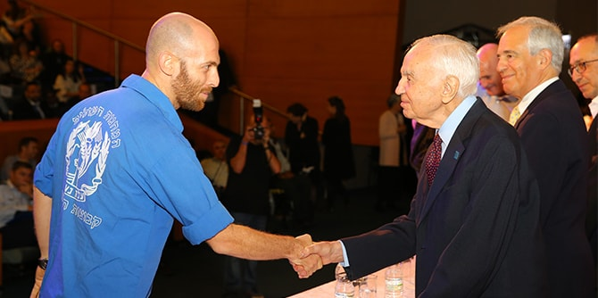

On October 30, 2017, the Mandel Leadership Institute celebrated the graduation of its programs in a festive ceremony held in the presence of Mr. Morton Mandel, chairman and CEO of the Mandel Foundation; Professor Jehuda Reinharz, the president of the Mandel Foundation; Mr. Moshe Vigdor, the director general of the Mandel Foundation–Israel; Dr. Eli Gottlieb, director of the Mandel Leadership Institute; Brigadier-General Zvika Fairaizen, the IDF chief education officer; and Mr. Meir Shimoni, the director of the Ministry of Education’s Jerusalem District.
"As a member of the Ministry of Education’s management team for almost a decade now, I have a perspective that enables me to appreciate the impact of Mandel graduates on Israel’s education system,” said Meir Shimoni, who represented the Ministry of Education at the ceremony. "I can testify to the fact that many of our very best educational leaders, including heads of educational institutions, directors of local education departments, and leading educational project directors, are graduates of the Mandel Leadership Institute.”
Shimoni stressed the importance of the Mandel Leadership Institute's programs, and its partnerships with the Ministry of Education. "As the founder of the Ministry of Education's Haredi education division," he said, "I would like to express my support for the Institute's leadership training programs for the Haredi community. I view the development of the Haredi sector, and its integration into mainstream Israeli society, as a matter of great importance." He also praised the Institute's youth leadership program, saying: "The Mandel Youth Leadership Program serves as a wonderful platform for sharing ideas and practices in informal education, and for discussing the challenges it faces due to the social and cultural realities of Israeli society, while also promoting discourse and collaboration between all sectors."

"These are just small examples of the significant and important work that the Institute and its leaders carry out," Shimoni continued. "About two years ago, the Ministry decided to conduct a professional development program for its senior managers, in partnership with the Mandel Leadership Institute. This program made a real contribution to our thinking as managers, equipping us with unique tools and offering us a different professional management perspective. The Institute's faculty also provided us with extremely serious and in-depth professional support. The feedback that was received at the end of the program bore testament to the importance of the Institute's contribution."
The ceremony, which was held at the Menachem Begin Heritage Center in Jerusalem, marked the graduation of the fellows of the Mandel IDF Educational Leadership Program – senior officers from all branches of the Israel Defense Forces; 20 fellows from Cohort 3 of the Mandel Program for Leadership Development in the Haredi Community, and 20 fellows from Cohort 2 of the Mandel Youth Leadership Program, who are senior leaders of Israeli informal education organizations.
“What the approach of the program and the IDF share is an appreciation of the importance of investing in the development of commanders who have a social-educational approach, as part of the reinforcement of the resilience of the IDF as a national army, an army of the people in a Jewish and democratic state,” said the IDF Chief Education Officer, Brigadier-General Zvika Fairaizen. Addressing the graduates, he said: “I have confidence in your ability to use wisely the knowledge base you have gained over the last year. We in the IDF expect you to lead and to make a contribution based on what you have learned in the different units in which you serve.”
The ceremony also marked the graduation of 19 fellows of Cohort 24 of the Mandel School for Educational Leadership, a joint venture with the Ministry of Education that was established in 1991. During their two years of intensive study, the fellows dealt with central issues in education, leadership, and society in Israel.
“The big reward is that we may have helped those of you who are graduating today to be better than you otherwise might be,” said
Mr. Morton Mandel, chairman and CEO of the Mandel Foundation, to the new graduates. “We chose to invest in people rather than objects, because of our deep conviction that ‘it’s all about who.’ You are the living proof that my brothers and I were right to invest in people of exceptional quality. I could not be more proud.”
{kind=link}